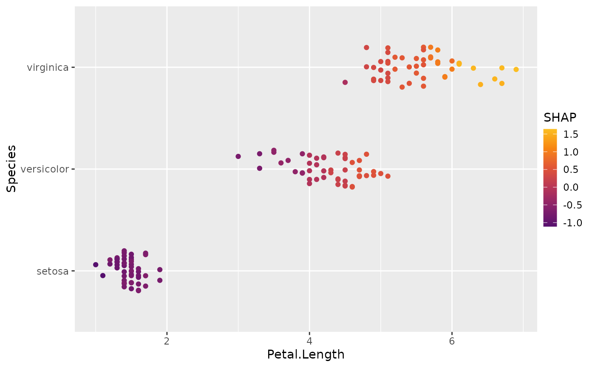
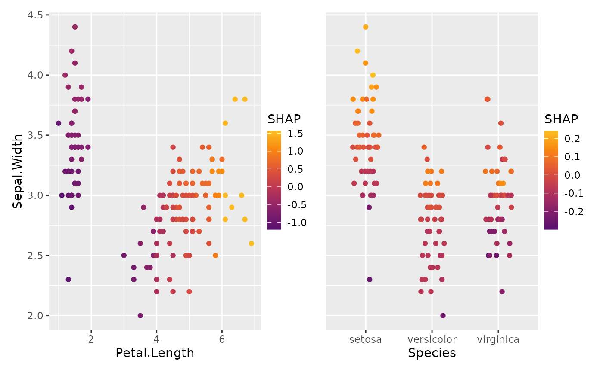
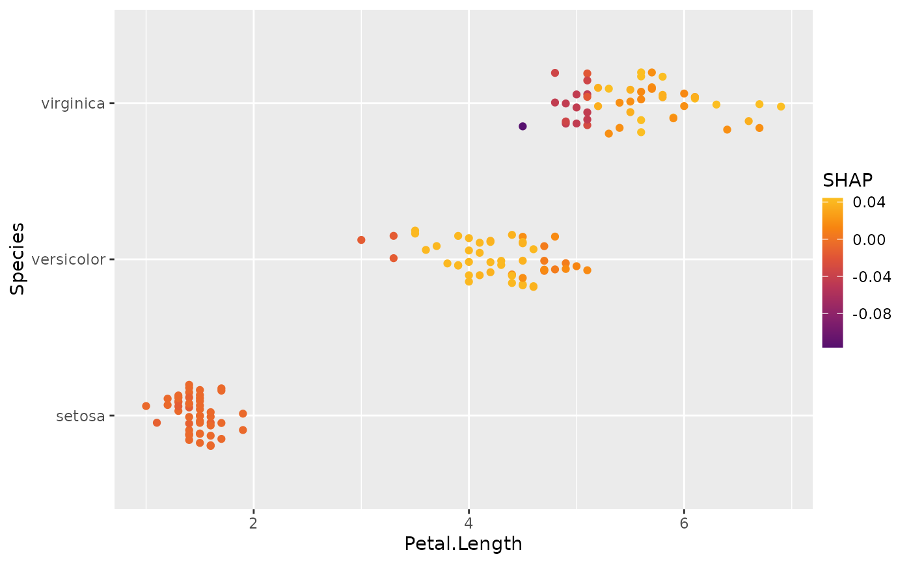
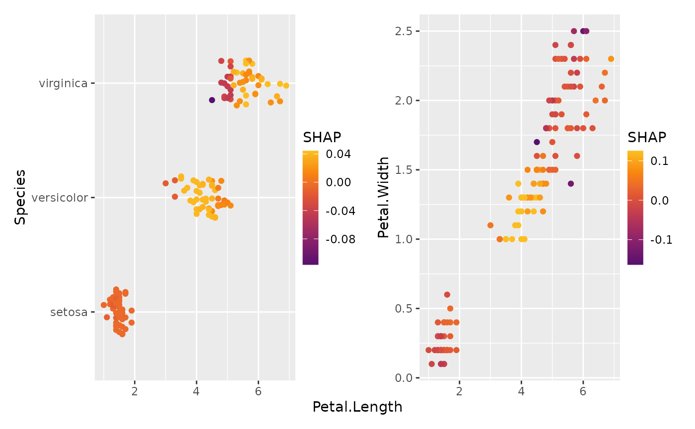
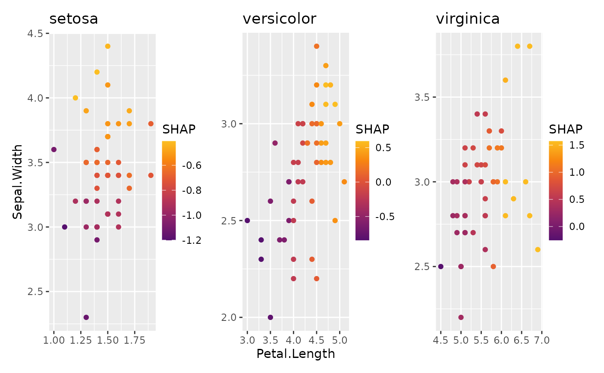

Scatterplot of two features, showing the sum of their SHAP values on the color scale.
This allows to visualize the combined effect of two features, including interactions.
A typical application are models with latitude and longitude as features (plus
maybe other regional features that can be passed via add_vars).
If SHAP interaction values are available, setting interactions = TRUE allows
to focus on pure interaction effects (multiplied by two).
sv_dependence2D(object, ...)
# S3 method for default
sv_dependence2D(object, ...)
# S3 method for shapviz
sv_dependence2D(
object,
x,
y,
viridis_args = getOption("shapviz.viridis_args"),
jitter_width = NULL,
jitter_height = NULL,
interactions = FALSE,
add_vars = NULL,
...
)
# S3 method for mshapviz
sv_dependence2D(
object,
x,
y,
viridis_args = getOption("shapviz.viridis_args"),
jitter_width = NULL,
jitter_height = NULL,
interactions = FALSE,
add_vars = NULL,
...
)An object of class "(m)shapviz".
Arguments passed to ggplot2::geom_jitter().
Feature name for x axis. Can be a vector/list if object is
of class "shapviz".
Feature name for y axis. Can be a vector/list if object is
of class "shapviz".
List of viridis color scale arguments, see
?ggplot2::scale_color_viridis_c. The default points to the global option
shapviz.viridis_args, which corresponds to
list(begin = 0.25, end = 0.85, option = "inferno").
These values are passed to ggplot2::scale_color_viridis_*().
For example, to switch to a standard viridis scale, you can either change the
default via options(shapviz.viridis_args = list()), or set
viridis_args = list(). Only relevant if color_var is not NULL.
The amount of horizontal jitter. The default (NULL) will
use a value of 0.2 in case v is discrete, and no jitter otherwise.
(Numeric variables are considered discrete if they have at most 7 unique values.)
Can be a vector/list if v is a vector.
Similar to jitter_width for vertical scatter.
Should SHAP interaction values be plotted? The default (FALSE)
will show the rowwise sum of the SHAP values of x and y. If TRUE, will
use twice the SHAP interaction value (requires SHAP interactions).
Optional vector of feature names, whose SHAP values should be added
to the sum of the SHAP values of x and y (only if interactions = FALSE).
A use case would be a model with geographic x and y coordinates, along with some
additional locational features like distance to the next train station.
An object of class "ggplot" (or "patchwork") representing a dependence plot.
sv_dependence2D(default): Default method.
sv_dependence2D(shapviz): 2D SHAP dependence plot for "shapviz" object.
sv_dependence2D(mshapviz): 2D SHAP dependence plot for "mshapviz" object.
dtrain <- xgboost::xgb.DMatrix(data.matrix(iris[, -1]), label = iris[, 1])
fit <- xgboost::xgb.train(data = dtrain, nrounds = 50, nthread = 1)
sv <- shapviz(fit, X_pred = dtrain, X = iris)
sv_dependence2D(sv, x = "Petal.Length", y = "Species")

sv_dependence2D(sv, x = "Petal.Length", y = "Sepal.Width")

sv_dependence2D(sv, x = c("Petal.Length", "Species"), y = "Sepal.Width")

sv_dependence2D(
sv, x = c("Petal.Length", "Species"), y = c("Petal.Width", "Sepal.Width")
)

# SHAP interaction values
sv2 <- shapviz(fit, X_pred = dtrain, X = iris, interactions = TRUE)
sv_dependence2D(sv2, x = "Petal.Length", y = "Species", interactions = TRUE)

sv_dependence2D(
sv2, x = "Petal.Length", y = c("Species", "Petal.Width"), interactions = TRUE
)
# mshapviz object
mx <- split(sv, f = iris$Species)
sv_dependence2D(mx, x = "Petal.Length", y = "Sepal.Width")